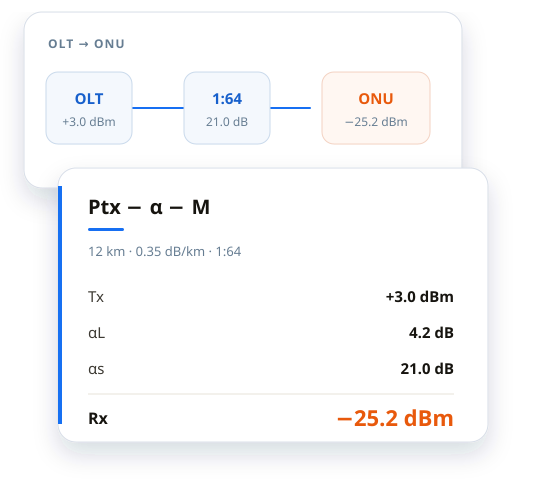

Nombre la pregunta
Decida si comprueba atenuación, capacidad, direccionamiento o autonomía, y abra esa herramienta.
INGENIERÍA DE REDES Y TELECOMUNICACIONES
Fibra, IP, radio y energía están en el mismo conjunto de páginas. Cada página indica la fórmula, las hipótesis y los límites. El cálculo se queda en este navegador.

Las herramientas se agrupan por el problema de ingeniería, no por una lista plana. Elija un camino y abra la calculadora que lo responde.
Calcule primero la atenuación y el presupuesto óptico; después el divisor, el alcance y el nivel de recepción de la ONU. Si la medida de campo es baja, compare los eventos OTDR con el diseño antes de cambiar equipos.
Empezar por el presupuesto ópticoConvierta la carga en enlaces de subida y en direcciones. Ancho de banda, sobresuscripción, subredes, VLAN y MTU forman una sola comprobación.
Empezar por el ancho de bandaPoE, el armario, el PUE, la refrigeración, el SAI y el grupo electrógeno siguen la misma carga. Si omite el PoE o el frío, el grupo queda corto.
Abrir energía y refrigeraciónLa cobertura y la capacidad dimensionan los AP. El anillo de transmisión y los enlaces del OLT dicen qué queda tras un fallo. Las hipótesis tienen que coincidir.
Empezar por la planificación Wi-FiEl resultado sirve para comparar opciones y acotar una avería. El diseño final y la aceptación siguen necesitando la documentación del equipo y una medida de campo.
Decida si comprueba atenuación, capacidad, direccionamiento o autonomía, y abra esa herramienta.
Use el valor de diseño o la lectura de campo. Siga las unidades, la eficiencia y el margen escritos en esa página.
Lea la fórmula, el alcance y la restricción. Una norma que la página no cita no está reclamada.
Bits o bytes, margen dentro de la atenuación, envejecimiento dentro de la autonomía: la página de la herramienta dice cuál usó. Léalo antes de llevar el número a otra página.
Calcular no envía las entradas al sitio. Si una herramienta guarda historial, lo guarda en este equipo.
Sirve para comparar opciones y acotar una avería. Los datos del fabricante, el instrumento de campo y el diseño formal siguen haciendo falta.
Una calculadora devuelve un número. Un tema o una guía dice en qué paso del diseño entra ese número.
Compruebe el ancho de banda, la agregación y lo que queda en N-1.
Una la carga térmica, el PUE y la selección de equipos.
Rectificadores, autonomía de baterías, grupo electrógeno y solar en la misma discusión.
Escriba el ancho de banda de subida y el margen para que otra persona pueda repetirlo.
Estime el calor que debe salir de la sala antes de elegir equipos.
Juzgue el enlace de acceso con el tráfico real, no con una proporción fija.
Use esta lista si ya conoce el campo. Use la búsqueda de arriba si conoce el nombre.
No. El resultado sirve para planificar, comparar, revisar y analizar averías. No sustituye los datos del fabricante, una medida de campo, un diseño formal ni una prueba de aceptación.
No. El cálculo se hace en el navegador. Si una herramienta guarda historial, lo guarda en este equipo. La analítica opcional solo se carga si usted la acepta.
En la página de cada herramienta. Si usa una fórmula, la fórmula y las unidades están escritas ahí. Si la página no cita una norma, no está afirmando esa norma.
El sitio está en inglés, chino simplificado y español. Algunas herramientas existen en los tres. El selector está en la parte superior de la página.